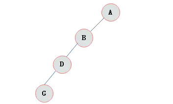
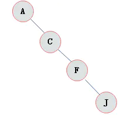
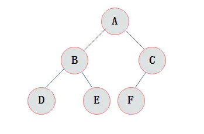
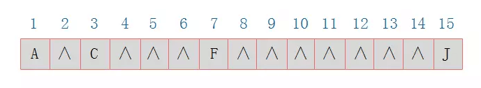
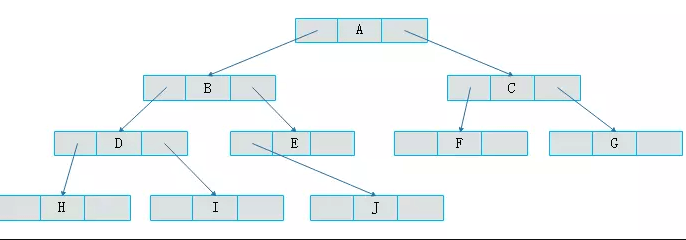

7.二叉树(BinaryTree)¶
二叉树是 n(n>=0)个结点的有限集合， 该集合或者为空集（称为空二叉树），或者由一个根结点和两棵互不相交的、分别称为根结点的左子树和右子树组成。

二叉树特点¶
由二叉树定义以及图示分析得出二叉树有以下特点：
- 每个结点最多有两颗子树，所以二叉树中不存在度大于 2 的结点。
- 左子树和右子树是有顺序的，次序不能任意颠倒。
- 即使树中某结点只有一棵子树，也要区分它是左子树还是右子树。
二叉树性质¶
- 在二叉树的第 i 层上最多有 2(i-1) 个节点 。（i>=1）
- 二叉树中如果深度为 k,那么最多有 2k-1 个节点。(k>=1）
- n0=n2+1 n0 表示度数为 0 的节点数，n2 表示度数为 2 的节点数。
- 在完全二叉树中，具有 n 个节点的完全二叉树的深度为[log2n]+1，其中[log2n]是向下取整。
- 若对含 n 个结点的完全二叉树从上到下且从左至右进行 1 至 n 的编号，则对完全二叉树中任意一个编号为 i 的结点有如下特性：
(1) 若 i=1，则该结点是二叉树的根，无双亲, 否则，编号为 [i/2] 的结点为其双亲结点; (2) 若 2i>n，则该结点无左孩子， 否则，编号为 2i 的结点为其左孩子结点； (3) 若 2i+1>n，则该结点无右孩子结点， 否则，编号为 2i+1 的结点为其右孩子结点。
斜树¶
斜树：所有的结点都只有左子树的二叉树叫左斜树。所有结点都是只有右子树的二叉树叫右斜树。这两者统称为斜树。


满二叉树¶
在一棵二叉树中。如果所有分支结点都存在左子树和右子树，并且所有叶子都在同一层上，这样的二叉树称为满二叉树。 满二叉树的特点有：
- 叶子只能出现在最下一层。出现在其它层就不可能达成平衡。
- 非叶子结点的度一定是 2。
- 在同样深度的二叉树中，满二叉树的结点个数最多，叶子数最多。

完全二叉树¶
对一颗具有 n 个结点的二叉树按层编号，如果编号为 i(1<=i<=n)的结点与同样深度的满二叉树中编号为 i 的结点在二叉树中位置完全相同，则这棵二叉树称为完全二叉树。 
特点： 1）叶子结点只能出现在最下层和次下层。 2）最下层的叶子结点集中在树的左部。 3）倒数第二层若存在叶子结点，一定在右部连续位置。 4）如果结点度为 1，则该结点只有左孩子，即没有右子树。 5）同样结点数目的二叉树，完全二叉树深度最小。 注：满二叉树一定是完全二叉树，但反过来不一定成立。
二叉树的存储结构¶
顺序存储¶
二叉树的顺序存储结构就是使用一维数组存储二叉树中的结点，并且结点的存储位置，就是数组的下标索引。
上图所示的一棵完全二叉树采用顺序存储方式，如下图表示：

由图上图可以看出，当二叉树为完全二叉树时，结点数刚好填满数组。 那么当二叉树不为完全二叉树时，采用顺序存储形式如何呢?

其中浅色结点表示结点不存在。那么上图所示的二叉树的顺序存储结构如下图所示：

其中，∧ 表示数组中此位置没有存储结点。 此时可以发现，顺序存储结构中已经出现了空间浪费的情况。 那么对于右斜树极端情况对应的顺序存储结构如下图所示：

由上图可以看出，对于这种右斜树极端情况，采用顺序存储的方式是十分浪费空间的。 因此，顺序存储一般适用于完全二叉树。
二叉链表¶
既然顺序存储不能满足二叉树的存储需求，那么考虑采用链式存储。 由二叉树定义可知，二叉树的每个结点最多有两个孩子。 因此，可以将结点数据结构定义为一个数据和两个指针域。 表示方式如下图所示：
定义节点代码
则完全二叉树可以采用下图表示。

上图中采用一种链表结构存储二叉树，这种链表称为二叉链表。
二叉树遍历¶
二叉树的遍历是指从二叉树的根结点出发， 按照某种次序依次访问二叉树中的所有结点， 使得每个结点被访问一次，且仅被访问一次。 二叉树的访问次序可以分为四种：
前序遍历: 根->左子树->右子树
中序遍历: 左子树->根->右子树
后序遍历; 左子树->右子树->根
层序遍历
前序遍历¶
通俗的说就是从二叉树的根结点出发， 当第一次到达结点时就输出结点数据， 按照先向左在向右的方向访问。
上图所示二叉树访问如下：
- 从根结点出发，则第一次到达结点 A，故输出 A;
- 继续向左访问，第一次访问结点 B，故输出 B；
- 按照同样规则，输出 D，输出 H；
- 当到达叶子结点 H，返回到 D，此时已经是第二次到达 D，故不在输出 D，进而向 D 右子树访问，D 右子树不为空，则访问至 I，第一次到达 I，则输出 I；
- I 为叶子结点，则返回到 D，D 左右子树已经访问完毕，则返回到 B，进而到 B 右子树，第一次到达 E，故输出 E；
- 向 E 左子树，故输出 J；
- 按照同样的访问规则，继续输出 C、F、G；
则上图所示二叉树的前序遍历输出为：
ABDHIEJCFG
中序遍历¶
就是从二叉树的根结点出发，当第二次到达结点时就输出结点数据，按照先向左在向右的方向访问。
上图所示二叉树中序访问如下：
- 从根结点出发，则第一次到达结点 A，不输出 A，继续向左访问，第一次访问结点 B，不输出 B；继续到达 D，H；
- 到达 H，H 左子树为空，则返回到 H，此时第二次访问 H，故输出 H；
- H 右子树为空，则返回至 D，此时第二次到达 D，故输出 D；
- 由 D 返回至 B，第二次到达 B，故输出 B；
- 按照同样规则继续访问，输出 J、E、A、F、C、G；
则上图所示二叉树的中序遍历输出为：
HDIBJEAFCG
后序遍历¶
就是从二叉树的根结点出发，当第三次到达结点时就输出结点数据，按照先向左在向右的方向访问。
上图所示二叉树后序访问如下：
- 从根结点出发，则第一次到达结点 A，不输出 A，继续向左访问，第一次访问结点 B，不输出 B；继续到达 D，H；
- 到达 H，H 左子树为空，则返回到 H，此时第二次访问 H，不输出 H；
- H 右子树为空，则返回至 H，此时第三次到达 H，故输出 H；
- 由 H 返回至 D，第二次到达 D，不输出 D；
- 继续访问至 I，I 左右子树均为空，故第三次访问 I 时，输出 I；
- 返回至 D，此时第三次到达 D，故输出 D；
- 按照同样规则继续访问，输出 J、E、B、F、G、C，A；
则上图所示二叉树的后序遍历输出为：
HIDJEBFGCA
层次遍历¶
层次遍历就是按照树的层次自上而下的遍历二叉树。 针对上图所示二叉树的层次遍历结果为：
ABCDEFGHIJ
虽然二叉树的遍历过程看似繁琐，但是由于二叉树是一种递归定义的结构， 故采用递归方式遍历二叉树的代码十分简单。 递归实现代码如下：
package datastructure.tree;
import lombok.Getter;
import lombok.Setter;
import java.util.Queue;
import java.util.concurrent.LinkedBlockingDeque;
/**
* 二叉树
*
* <p>
* 定义:二叉树是n(n>=0)个结点的有限集合，该集合或者为空集（称为空二叉树），或者由一个根结点和两棵互不相交的、分别称为根结点的左子树和右子树组成
* </p>
* <p>
* 二叉树特点: 由二叉树定义以及图示分析得出二叉树有以下特点： 1）每个结点最多有两颗子树，所以二叉树中不存在度大于2的结点。
* 2）左子树和右子树是有顺序的，次序不能任意颠倒。 3）即使树中某结点只有一棵子树，也要区分它是左子树还是右子树。
* </p>
* <p>
* 二叉树性质: 1）在二叉树的第i层上最多有2i-1 个节点 。（i>=1） 2）二叉树中如果深度为k,那么最多有2k-1个节点。(k>=1）
* 3）n0=n2+1 n0表示度数为0的节点数，n2表示度数为2的节点数。
* 4）在完全二叉树中，具有n个节点的完全二叉树的深度为[log2n]+1，其中[log2n]是向下取整。 5）若对含 n
* 个结点的完全二叉树从上到下且从左至右进行 1 至 n 的编号，则对完全二叉树中任意一个编号为 i 的结点有如下特性：
* </p>
* <p>
* (1) 若 i=1，则该结点是二叉树的根，无双亲, 否则，编号为 [i/2] 的结点为其双亲结点; (2) 若 2i>n，则该结点无左孩子， 否则，编号为
* 2i 的结点为其左孩子结点； (3) 若 2i+1>n，则该结点无右孩子结点， 否则，编号为2i+1 的结点为其右孩子结点。 。
* </p>
*
* @author liuyi27
*
*/
@Setter
@Getter
public class BinaryTree {
private Object data;
private BinaryTree lchild, rchild;
/**
* 前序遍历递归算法
* <p>
* 前序遍历通俗的说就是从二叉树的根结点出发，当第一次到达结点时就输出结点数据，按照先向左再向右的方向访问。
* </p>
*/
public void preOrderTraverse(BinaryTree tree) {
if (tree == null) {
return;
}
System.out.print(tree.getData());
preOrderTraverse(tree.getLchild());
preOrderTraverse(tree.getRchild());
}
/**
* 中序遍历递归算法
* <p>
* 中序遍历就是从二叉树的根结点出发，当第二次到达结点时就输出结点数据，按照先向左再向右的方向访问
* </p>
*/
public void inOrderTraverse(BinaryTree tree) {
if (tree == null) {
return;
}
inOrderTraverse(tree.getLchild());
System.out.print(tree.getData());
inOrderTraverse(tree.getRchild());
}
/**
* 后序遍历递归算法
* <p>
* 后序遍历就是从二叉树的根结点出发，当第三次到达结点时就输出结点数据，按照先向左再向右的方向访问
* </p>
*/
public void postOrderTraverse(BinaryTree tree) {
if (tree == null) {
return;
}
postOrderTraverse(tree.getLchild());
postOrderTraverse(tree.getRchild());
System.out.print(tree.getData());
}
/**
* 前序建立二叉树
*/
public static void preCreate() {
}
/**
* 层序遍历
* <p>
* 层次遍历就是按照树的层次自上而下的遍历二叉树
* </p>
*
* @param node
* @param queue
*/
public void LayerOrder(BinaryTree node, Queue<BinaryTree> queue) {
if (node != null && queue.isEmpty()) {
// 将当前节点放入队列首指针所指位置
queue.add(node);
System.out.print(queue.poll().getData());
} else {
System.out.print(node.getData());
}
if (node.lchild != null) {
queue.add(node.lchild);
}
if (node.rchild != null) {
queue.add(node.rchild);
}
BinaryTree nextNode = queue.poll();
if (nextNode != null) {
this.LayerOrder(nextNode, queue);
}
}
public static void main(String[] args) {
BinaryTree biTree2L3L = new BinaryTree();
biTree2L3L.setData("D");
BinaryTree biTree2L = new BinaryTree();
biTree2L.setData("B");
biTree2L.setLchild(biTree2L3L);
BinaryTree biTree2R = new BinaryTree();
biTree2R.setData("C");
BinaryTree biTree = new BinaryTree();
biTree.setData("A");
biTree.setLchild(biTree2L);
biTree.setRchild(biTree2R);
Queue<BinaryTree> queue = new LinkedBlockingDeque<BinaryTree>();
biTree.LayerOrder(biTree, queue);
System.out.println("");
biTree.preOrderTraverse(biTree);
System.out.println("");
biTree.inOrderTraverse(biTree);
System.out.println("");
biTree.postOrderTraverse(biTree);
}
}
面试中关于二叉树结构的常见问题¶
-
求二叉树的高度
-
在二叉树中查找给定节点的祖先节点
-
求二叉树的最低公共祖先 LCA
性质:如果两条链有公共祖先,那么公共祖先往上的结点都重合.因为如果 x=x',那么 x->next=x'->next 必然成立.
可能性一:若是二叉搜索树.
1 如果 x,y 小于 root,则在左边找
2 如果 x,y 大于 root,则在右边找
3 如果 x,y 在 root 之间,则 root 就是 LCA
可能性二:不是二叉搜索树,甚至不是二叉树,但是,每个一节点都有 parent 指针
那么解法有 2:
1:空间换时间:从 x,y 到 root 的链表可以保存在栈中,找出最后一个相同结点即可.
2.不用空间换时间,多重扫描法,x,y 到 root 两条链路可能一长一短,相差为 n 个结点,那么长链表先前移 n 步,然后,二者同步前移,找到第一个相同结点即可.(树不含环,这种办法有效.)
可能性三:这是一棵只有 left 和 right 的平凡二叉树.
那么需要辅助空间,空间换时间法,先调用 16.中的 GetNodePath()获得两条从 root->x 和 root->y 的链表路径.然后比较两条链表,找到最后一个相同的结点即可.
//若是二叉搜索树,返回x和y的公共最低祖先LCA
node* LowestCommonAncestor1(node* root,node* x,node* y)
{
if(!root || !x || !y) return NULL;
if(x->value < root->value && y->value < root->value)
return LowestCommonAncestor1(root->left,x,y);
else if(x->value > root->value && y->value > root->value)
return LowestCommonAncestor1(root->right,x,y);
else
return root;
}
//若不是搜索二叉树,但是,每个结点都有父结点,空间换时间法,否则需要重重复复地扫描路径
node* LowestCommonAncestor2(node* x,node* y)
{
stack<node*> st1,st2;
while(x)
{
st1.push(x);
x=x->p;
}
while(y)
{
st2.push(y);
y=y->p;
}
node* pLCA=NULL;
while(!st1.empty() && !st2.empty() && st1.top()==st2.top())
{
pLCA=st1.top();
st1.pop();
st2.pop();
}
return pLCA;
}
//不用空间换时间法
int GetListLength(node* x)
{
int Count=0;
while(x)
{
++Count;
x=x->p;
}
return Count;
}
int Myabs(int val)
{
return val > 0 ? val : -val;
}
node* LowestCommonAncestor3(node* x,node* y)
{
int LengthX=GetListLength(x);
int LengthY=GetListLength(y);
node* pLong=x,*pShort=y;
if(LengthX < LengthY)
{
pLong=y;
pShort=x;
}
for(int i=0;i<Myabs(LengthX-LengthY);++i)
pLong=pLong->p;
while( pLong && pShort && pLong !=pShort)
{
pLong=pLong->p;
pShort=pShort->p;
}
if(pLong == pShort)
return pLong;
return NULL;
}
//既不是二叉搜索树,也不没有parent指针,只是一棵平凡的二叉树
bool GetNodePath(node* root, node* pNode, list<node*>& path);
node* LowestCommonAncestor4(node* root,node* x,node* y)
{
list<node*> path1;
list<node*> path2;
GetNodePath(root,x,path1);
GetNodePath(root,y,path2);
node* pLCA=NULL;
list<node*>::const_iterator it1=path1.begin();
list<node*>::const_iterator it2=path2.begin();
while(it1 != path1.end() && it2 != path2.end() && *it1 == * it2)
{
pLCA=*it1;
++it1;
++it2;
}
return pLCA;
}
-
已知前序遍历序列和中序遍历序列，确定一棵二叉树。 https://www.cnblogs.com/pullself/p/10136568.html
-
已知后序遍历序列和中序遍历序列，确定一棵二叉树。
-
在二叉树中找出和为某一值的所有路径
要求所有路径,路径即 root 到某一结点的结点之集合.这是一个深度优先原则的搜索.我们很容易想到先序遍历.
为了跟踪路径和,我们需要一个额外的辅助栈来跟踪递归调用栈的操作过程.
在进入到下一个调用 FindPath(left)和 FindPath(right)时,递归栈会将 root 压入栈,因此我们也模仿进栈.当 FindPath(left)和 FindPath(right)返回,FindPath(root)运行周期到之后, 局部函数变量 root 会被析造,root 会从递归栈中弹出,因此,我们也从辅助栈中弹出 root,只需要在中间加上判断条件,将满足条件的结果输出即可.改成迭代版也很简单.
void FindPath(node* root,int expectedSum,vector<int>& Path,int currentSum);//先序遍历改装版
void FindPath(node* root,int expectedSum)
{
int currentSum=0;
vector<int> Path;
FindPath(root,expectedSum,Path,currentSum);
}
void FindPath(node* root,int expectedSum,vector<int>& Path,int currentSum)//先序遍历改装版
{
if(!root)
return ;
//访问根结点,同时将root->value加入辅助栈
currentSum += root->value;
Path.push_back(root->value);
if(root->left==NULL && root->right ==NULL && currentSum == expectedSum)
{
for(vector<int>::size_type i=0; i < Path.size(); ++i)
cout<<Path[i]<<' ';
cout<<endl;
}
FindPath(root->left,expectedSum,Path,currentSum);
FindPath(root->right,expectedSum,Path,currentSum);
//递归栈中,此时返回时,会将父结点销毁,因为,局部函数生命周期已经到了.
//所以辅助栈也需要和递归栈同步,将栈顶元素弹栈,同时当前路径减去栈顶元素
Path.pop_back();
currentSum-=root->value;
}
- 编写一个程序，把一个有序整数数组放到二叉树中
这道题做法非常多,单纯是这么要求比较奇怪,因此,我选择广度优先插入, 利用队列实现,其实插成一个链表,或者随便插入不知道可不可以?没有其它要求真不知道怎么弄.
- 判断整数序列是不是二叉搜索树的后序遍历结果
典型的递归思维,后序遍历,根在最后,因此用根将二叉搜索树可以分成左右子树,再递归处理左右子树即可.
- 求二叉树的镜像
画出一个特例,我们发现只需要交换每个结点的左右指针(注意:不是数值)即可.因此在先序遍历的时候换指针即可,没有顺序要求.
- 一棵排序二叉树（即二叉搜索树 BST），令 f=(最大值+最小值)/2，设计一个算法，找出距离 f 值最近、大于 f 值的结点。复杂度应尽可能低。
BST 中最大值是最右边的值,最小值是最左边的值,这样就容易求出 f,再求 f 的父指针或者右指针都可以?(我是这么认为的).这里求父指针.
- 把二叉搜索树转变成排序的双向链表
其实就是中序遍历的迭代版本,只是将中间的访问结点代码换成了调整指针.这种办法返回的是链表的最后一个指针 LastVist,因为是双链表,这也可以接受.
- 打印二叉树中的所有路径.
和前边的思路类似,用辅助栈记录递归栈的运行过程,先序遍历(深搜)的过程中,遇到叶子结点(!left && !right 的结点)就输出辅助栈的内容.
- 求二叉树中从根到某一结点的一条路径.
思路一如既往还是利用辅助栈来追踪递归调用栈的运行过程,只是过程有所区别,将结点入栈,如果在结点的左边能找到一条路径,那么不需要和递归栈同步(即弹栈),直接返回 true,如果左边没找到这样的一条路径,再到右边找,如果找到了,返回 true.如果左右都找不到存在一条这样的路径,则说明在这个结点上不可能存在这样的路径,需要在辅助栈中弹出这个结点.再遍历其它结点.实质上也是先序遍历的改装版.
-
判断 B 子树是否是 A 子树的子结构
-
利用先序和中序结果重建二叉树
-
求二叉树中叶子结点的个数
-
求二叉树中节点的最大距离。
如果我们把二叉树看成一个图，父子节点之间的连线是双向的，我们定义距离为两个节点之间边的个数。（来自编程之美）
特点：相距最远的两个节点，一定是两个叶子节点，或者一个结点到它的根节点。（为什么？）因为如果当前结点不是叶子结点，即它还有子结点，那么它的子结点到另一个端点的距离肯定可以达到更远。如果是根结点，那么根结点只可能有一条支路。
-
打印二叉树中某层的结点。
-
判断两棵二叉树是否相等